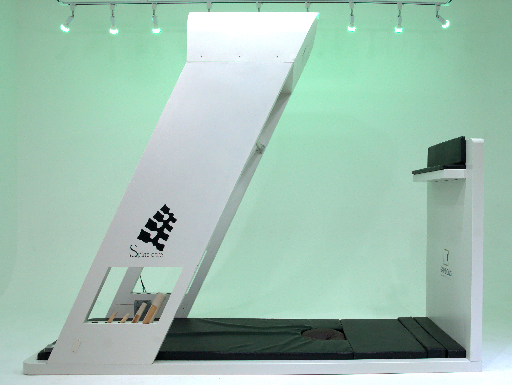
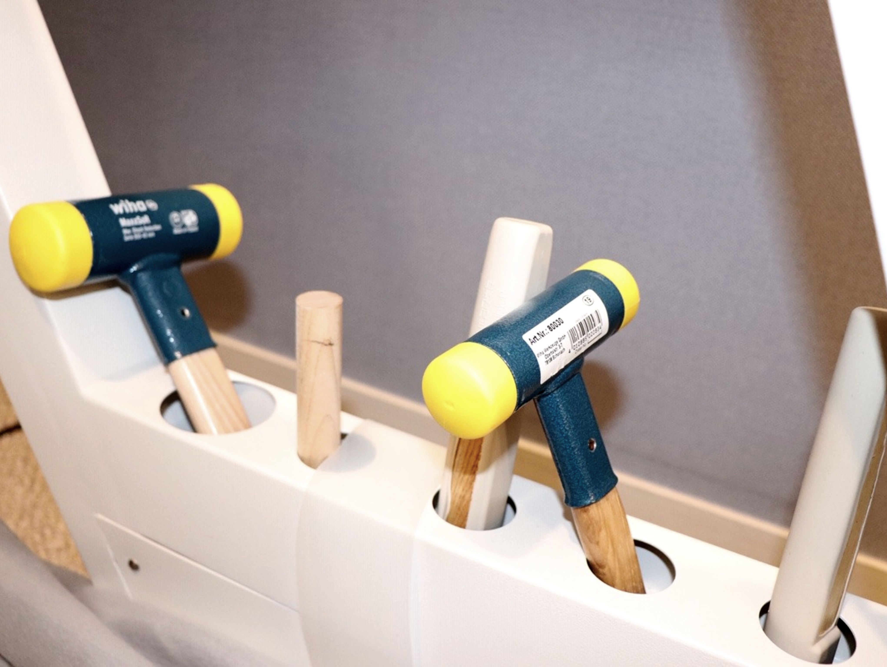

BODY-ALL WIKI
BODY-ALL WIKI
수원 추나 및 척추병원 선택 가이드:
공간척추정형술(SART)로 구조적 회복을 지향하다
수원 허리디스크 병원이나 수원 목디스크 병원을 찾고 계신가요?
치료 후에도 통증이 재발한다면 문제는 '공간'에 있습니다.
뼈 하나하나를 세밀하게 살피는 바디올의 SART를 확인해 보세요.
A. 핵심은 '신경이 지나가는 통로의 물리적 확보'에 있습니다.
단순한 근육 이완은 일시적일 수 있습니다. 바디올의 SART는 골반부터 시작해 척추 분절 하나하나의 좁아진 공간을 세밀하게 확보하여, 눌려 있던 신경 압박을 해소하고 구조적 원인에 따른 근본적인 회복을 지향합니다.

1. 척추정렬 회복을 위한 4단계 시스템
바디올의 공간척추교정은 '숲(전체 정렬)'을 먼저 보고 '나무(개별 분절)'를 세밀하게 바로잡는 체계적인 과정을 거칩니다.
01. 골반의 정렬과 공간확보공간척추교정의 베이스가 되는 가장 중요한 단계입니다. 주춧돌인 골반의 수평과 회전 변위를 세밀하게 조정하고 천장관절의 비틀림을 잡아 상부 척추가 바로 설 수 있는 토대를 마련합니다. 동시에 정교한 수기 술기로 척추 마디 사이를 물리적으로 견인하여 비틀려 끼어있던 척추가 움직일 수 있는 공간을 확보합니다. |

|
02. 척추정렬 회복나무를 보기 전 숲을 보는 단계입니다. 골반 교정 후 흐트러진 척추 전반의 배열을 중력 중심선에 위치시켜 안정적으로 지탱되도록 합니다. 분절별로 좌우로 기울어진 부분들을 무게중심선으로 환원시킵니다. 공간이 확보된 상태이기에 척추가 훨씬 쉽고 편안하게 건강한 위치로 돌아갈 수 있습니다. |

|
03. 세밀한 교타교정이제 나무를 볼 차례입니다. 안전한 의료용 교정도구를 통해 척추 뼈 하나하나의 틀어짐을 세밀하게 조정합니다. 해머링 기법(골타요법)은 공간척추교정의 정교한 교정 단계 중 하나로, 중증 질환이 아닌 이상 이 단계에서 대부분의 통증은 교정 즉시 개선되는 것을 지향합니다. |

|
04. 척추 회복기법교정된 척추가 올바른 위치에 안착될 수 있도록 척추회복기법을 시행합니다. 이는 통증의 재발을 막는 핵심 요소로, 일반적인 자세 교육이나 운동법과는 차별화된 바디올만의 노하우입니다. 세밀하게 교정된 상태가 일상에서도 오래 유지되도록 돕습니다. |

|
의료진을 가르치는 교육이사의 직접 수련
척추진단교정학회 이사 및 교육위원인 이동해 대표원장이 매일 모든 의료진을 직접 교육합니다.
바디올의 모든 원장은 동일 학회 소속의 교정 엘리트 팀으로, 4만 례의 임상 데이터를 공유하며 세밀한 뼈 하나하나의 교정 술기를 완벽히 숙지하고 있습니다.
A. 인상기를 통한 "공간확보"가 없다면 진정한 공간척추교정이 아닙니다.
단순히 도구로 두드리는 치료는 많지만, 환자의 몸을 띄워 중력을 해소하고 척추 마디를 실질적으로 벌려주는 인상기 과정은 바디올 공간척추교정의 핵심 상징입니다. 이 공간이 확보되어야만 안전하고 세밀한 교정이 가능합니다.

A. 같은 도구라도 "집도의의 숙련도"에 따라 결과는 하늘과 땅 차이입니다.
같은 수술 도구라도 누가 집도하느냐에 따라 예후가 다르듯, 공간척추교정 역시 학회 교육이사가 이끄는 교정 엘리트 팀의 숙련도가 치료의 성패를 가릅니다. 바디올은 4만 건의 압도적인 임상례를 바탕으로 가장 안전하고 효과적인 타격 지점을 세밀하게 찾아냅니다.

3. 증상별 세밀한 해결책
| 진료 과목 | 치료 지향점 | 관련 키워드 |
|---|---|---|
| 허리디스크/협착증 | 요추 공간 확보 및 신경 압박 해소 | 수원 허리통증 |
| 목디스크/거북목 | 경추 커브 회복 및 팔저림 완화 | 수원 목통증 |
| 골반 비대칭/휜다리 | 전신 밸런스의 기틀이 되는 하부 정렬 | 수원 추나요법 |
| 만성 난치성 통증 | 도침 유착 박리와 공간 교정 병행 | 수원 척추병원 |
4. 365일 야간·휴일 진료 안내
척추 교정은 치료의 연속성이 무엇보다 중요합니다. 바쁜 현대인을 위해 내원 편의를 극대화했습니다.
- • 평일: 10:00 ~ 20:30 (야간진료 / 점심 1-2시)
- • 주말·공휴일: 10:00 ~ 16:00 (점심 1-2시)
- • 설·추석 연휴 각 3일(총 6일) 외 365일 진료
- 편리한 주차: 건물 1층 전용 주차장에서 치료 시간 전액 무료 주차를 지원합니다.